CTR series
総合輸送型ロボット CTR
運搬・ピッキング
屋内カーゴの自律搬送
開発中
詳しく
| 用途 | 屋内カーゴの自律搬送・医療支援を想定 |
|---|---|
| 特徴 | 輸送に必要な多機能を搭載、多様な環境・場面に対応 |
| 出展 | 技育展・技育博（2024）、NT松戸（2025） |

ホーム ＞ 開発品
分類を選ぶと写真付きで表示します。各項目の「詳しく」で仕様と関連資料を表示します。
CTR series
運搬・ピッキング
屋内カーゴの自律搬送
開発中
| 用途 | 屋内カーゴの自律搬送・医療支援を想定 |
|---|---|
| 特徴 | 輸送に必要な多機能を搭載、多様な環境・場面に対応 |
| 出展 | 技育展・技育博（2024）、NT松戸（2025） |
CTR mini
運搬・ピッキング
運搬・ピッキング
開発中
| 用途 | 運搬・ピッキング |
|---|---|
| 特徴 | ユニット付け替えで形を変えるユニット構成型（BMR後継） |
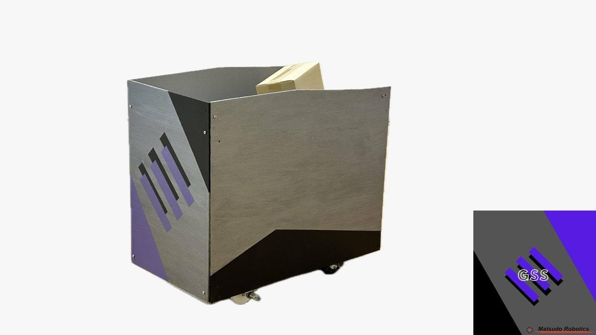
GSS series
運搬・ピッキング
大型の汎用輸送
開発中
| 用途 | 大型の汎用輸送 |
|---|---|
| 特徴 | カスタム可能・自由に運用できる機体 |

CWR CAR series
運搬・ピッキング
作業支援
開発中
| 用途 | 作業支援 |
|---|---|
| 特徴 | 垂直多関節アーム搭載・自動走行 |
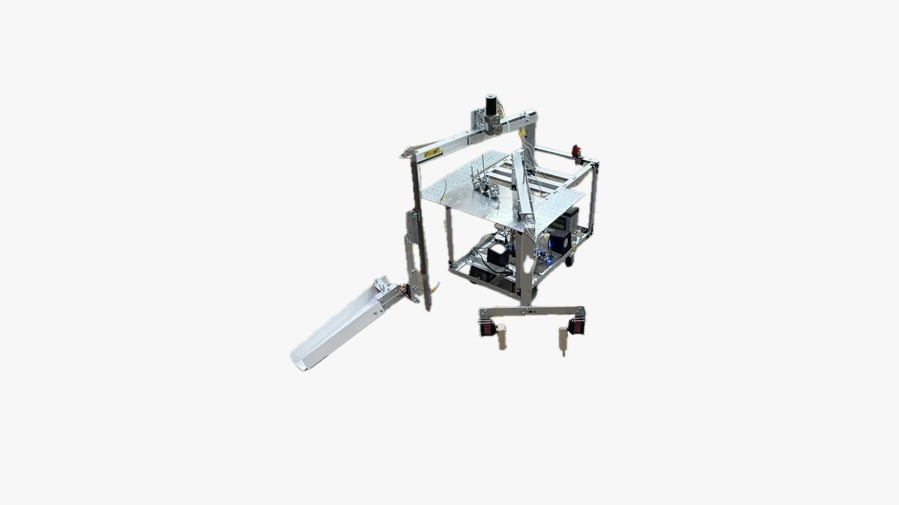
root BMR series
運搬・ピッキング
荷物のピッキング・運搬・管理
開発中
| 用途 | 荷物のピッキング・運搬・管理・輸送 |
|---|---|
| 特徴 | 小型走行・運搬ロボット |
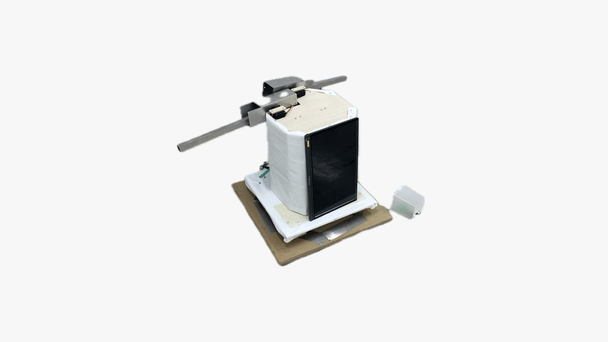
A1 series
案内
自律型の案内・誘導
開発中
| 用途 | 自律型の案内・誘導 |
|---|---|
| 特徴 | 大型LCD・誘導アーム・音声ガイド搭載、スマートフォンから投影可能 |
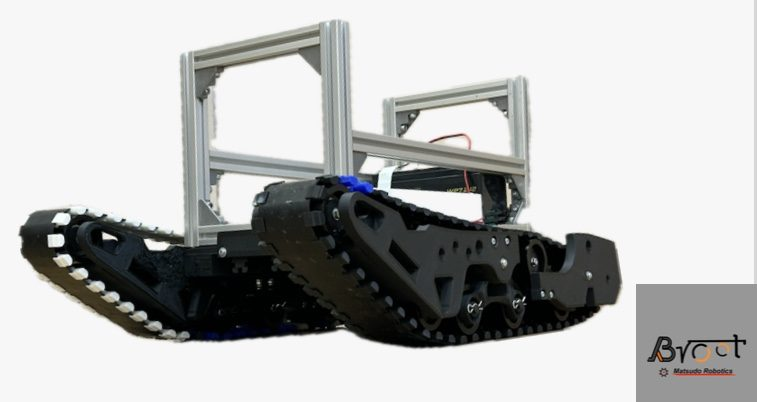
Broot
実験機
多環境適応の汎用走行
開発中
| 用途 | 多環境適応の汎用走行 |
|---|---|
| 将来想定 | 災害現場・危険環境での運用 |
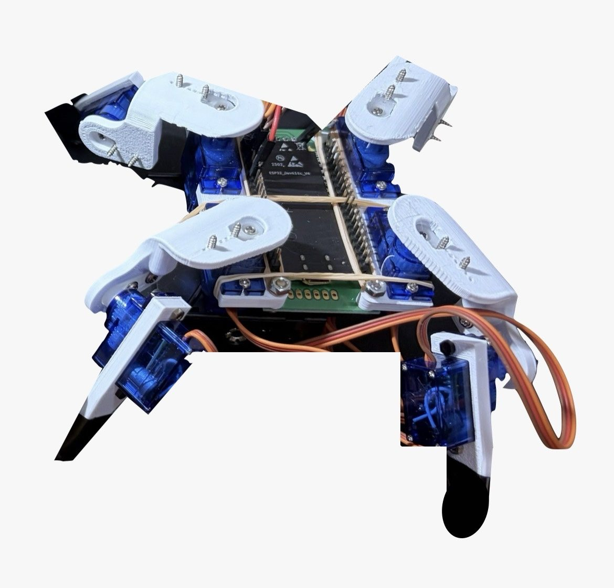
Eclipse / Aldebaran
実験機
多脚移動機構の検証
開発中
| 概要 | 1本の脚をサーボ2個で動かす自由度2の構成で、4脚で合計8個のサーボを ESP32 から制御する小型の歩行実験機。部品代を1万円以下（概算）に抑えた |
|---|---|
| 研究担当 | 戸松 煌太 |
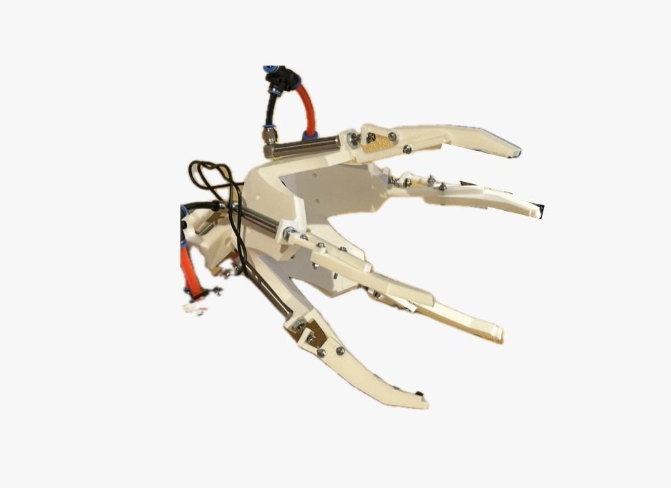
Ce PB
ハンド・先端ユニット
把持などの動作機構
開発中
| 種別 | ハンド・グリッパ |
|---|---|
| 概要 | 把持などの動作機構 |
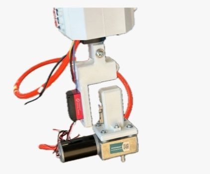
TM
ハンド・先端ユニット
角度調整・ハンド交換など
開発中
| 種別 | アーム先端ユニット |
|---|---|
| 概要 | 角度調整・ハンド交換ロータリー・先端動作工具・一点照明など |
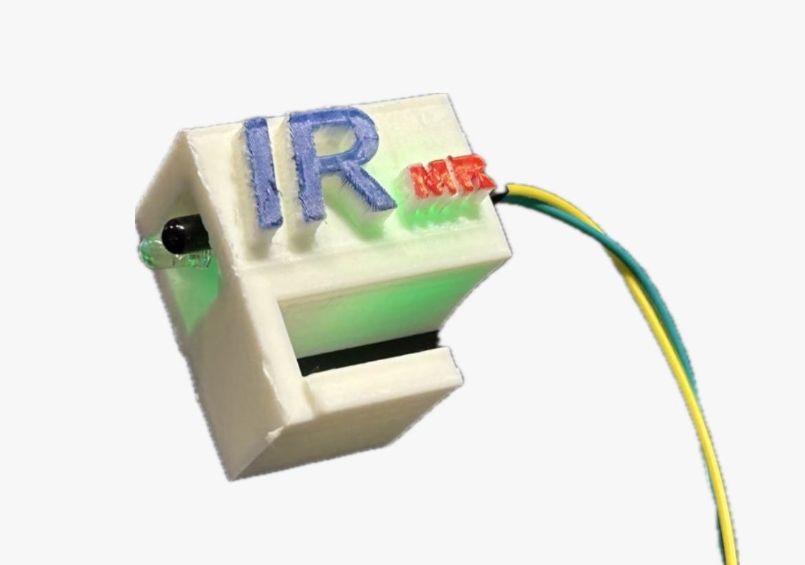
Reye
センサー・誘導
ライントレース用センサーなど
開発中
| 種別 | 光学機器ユニット |
|---|---|
| 概要 | ライントレース用IRセンサー・光感度センサーなど |
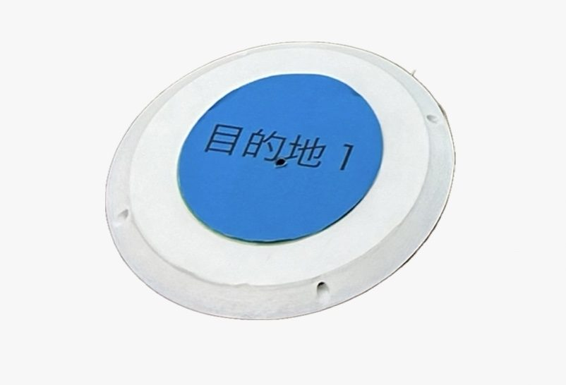
R road
センサー・誘導
不可視光などによる誘導
開発中
| 種別 | ロボット誘導端末 |
|---|---|
| 概要 | 不可視光などを用いたロボット誘導 |
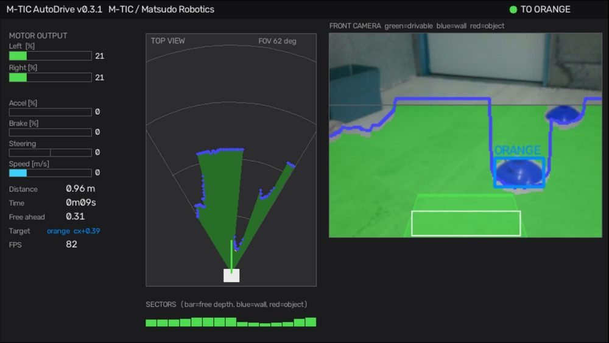
M-TIC AutoDrive
カメラ認識
カメラ1台で床認識・障害物回避
開発中
| 概要 | USBカメラ1台の映像で床を認識し、障害物を避けながら目標マーカーへ向かう制御ソフト |
|---|---|
| 実行環境 | Raspberry Pi 4B（完全オフライン） |
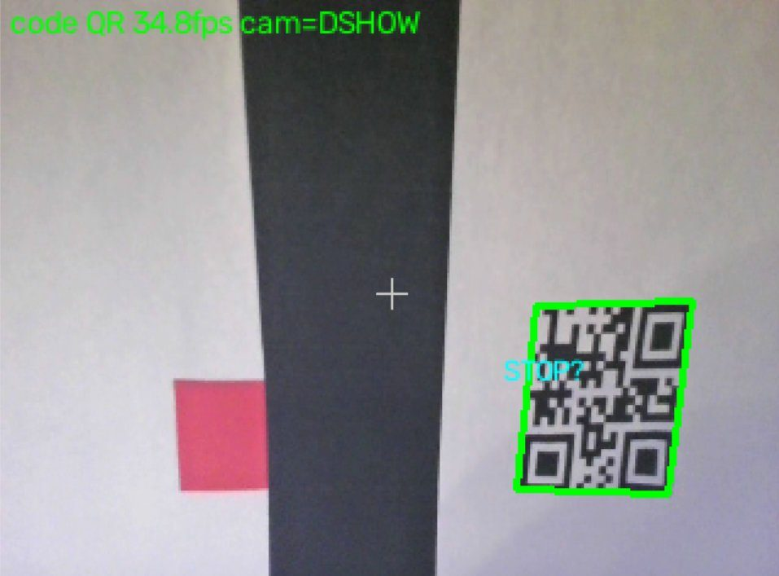
Vision Studio
カメラ認識
色検知・追跡・ライン・コード読取
開発中
| 概要 | 色検知・物体追跡・ライントレース・アーム接近・QR／バーコード読取の5モードを1つの画面で切り替えるアプリ |
|---|---|
| 実行環境 | Raspberry Pi 4B |
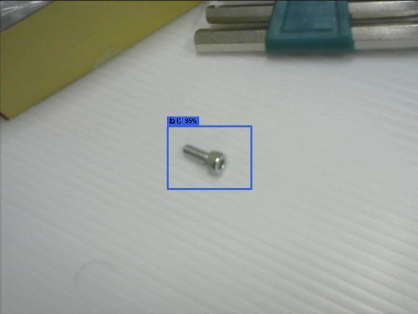
M-TIC Detect
カメラ認識
学習済みモデル＋自前写真で追加学習
開発中
| 概要 | 学習済みモデルで物体を検知し、画面から写真を撮って追加学習できるアプリ |
|---|---|
| 実行環境 | Raspberry Pi 4B |
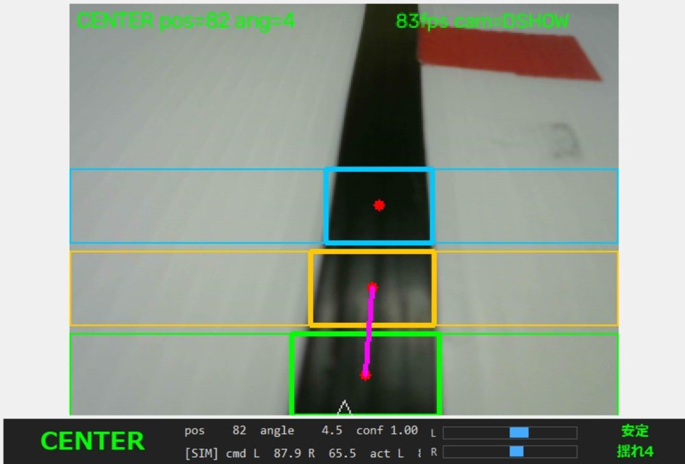
CWM_CamLine
カメラ認識
カメラでラインと停車位置を認識
開発中
| 概要 | カメラの映像で床のラインと赤マーカーを認識し、既存の赤外線センサーと同じ形式で出力するソフト |
|---|---|
| 実行環境 | Raspberry Pi 4B |
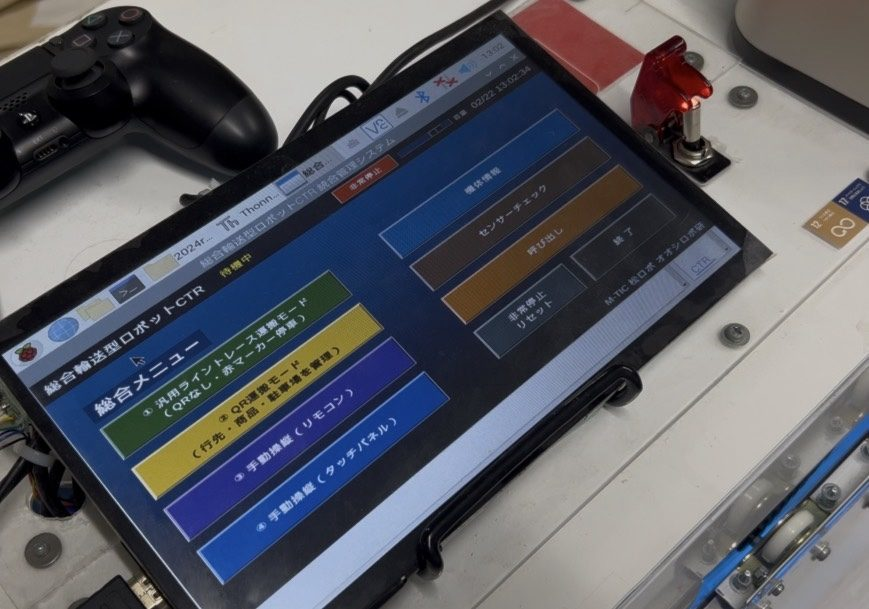
Linax php type パッケージ
ロボット制御・運行
複数モードを1つのアプリで稼働
開発中
| 概要 | Pythonでロボットを動かす基本アプリケーション。モードごとに独立していたアプリケーションを一つで稼働できるようにした |
|---|---|
| 製作 | 大城 公平 |
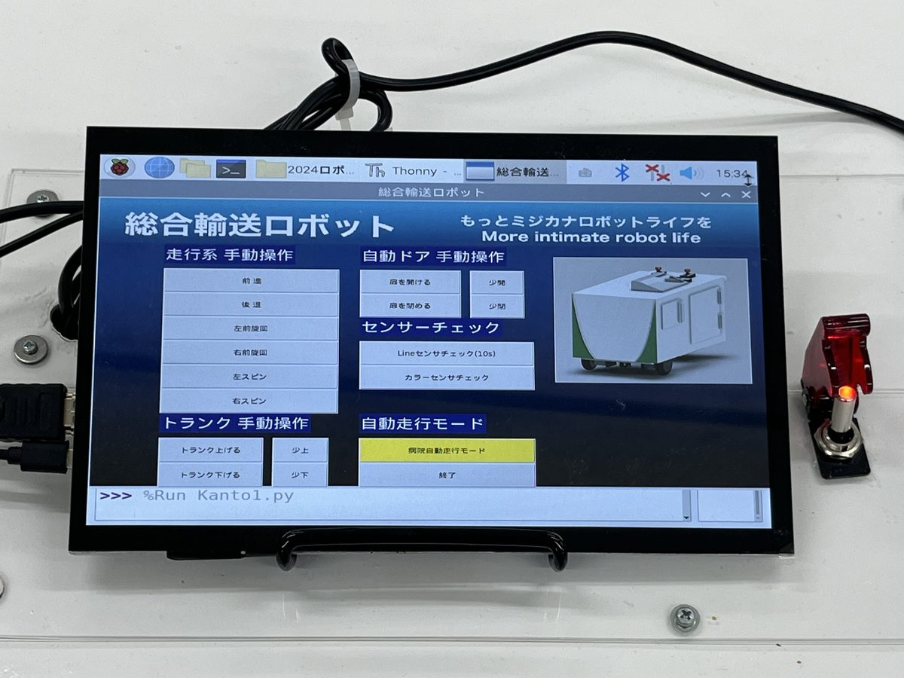
Linax php type
ロボット制御・運行
ロボットを動かす共通アプリ
運用中
| 概要 | Pythonでロボットを動かす専用の基本アプリケーション |
|---|---|
| 搭載 | CTR・CWR・GSSなど |
操縦ソフト
ロボット制御・運行
メンテナンス・点検時の手動操縦
開発中
| 概要 | メンテナンス・点検時に使用する手動操縦ソフト |
|---|
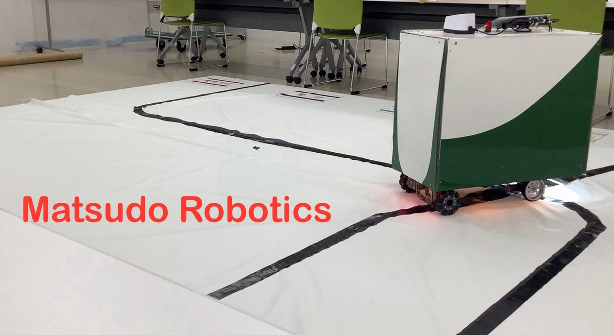
システム
ロボット制御・運行
機体に合わせたシナリオ制御
開発中
| 概要 | 各機体に合わせてシナリオを組み込んだシステムを製作しています |
|---|
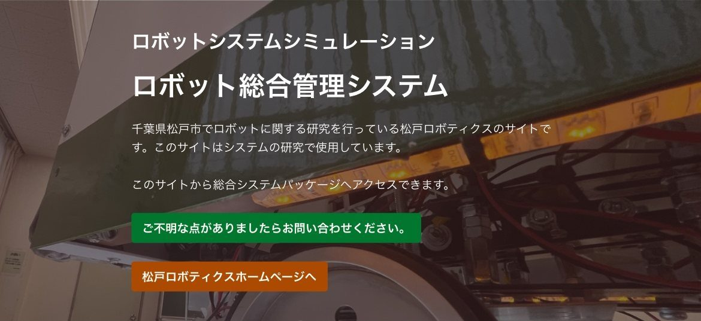
システム管理
ロボット制御・運行
ロボットの管理・遠隔操作のウェブシステム
開発中
| 概要 | ロボットを管理・制御するウェブシステム。機体モニタリング、遠隔操作パネル、2次元コードの生成などに取り組んでいます |
|---|
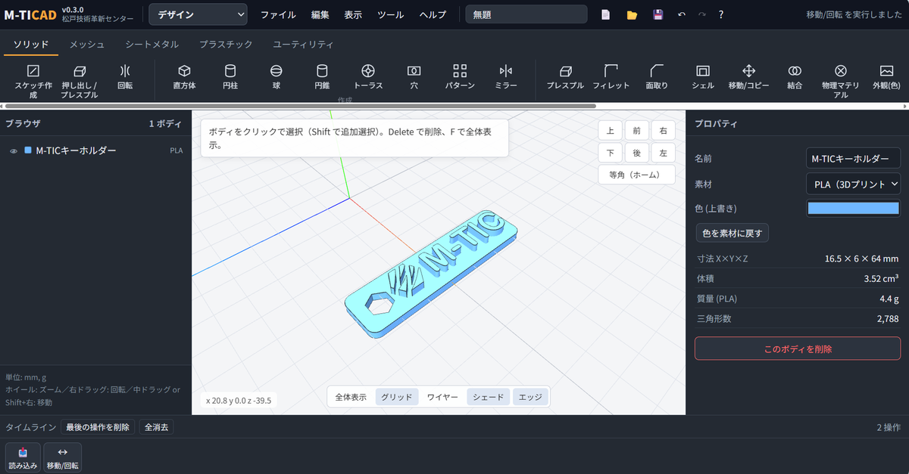
M-TICAD
設計支援
設計・シミュレーション・図面作成
開発中
| 概要 | CAD・CAM・CAEが揃った簡易ソフトウェア。簡単な機械設計・エレキ設計、シミュレーション、図面作成ができる |
|---|---|
| 動作 | ブラウザで動作し、インストール不要 |
| 用途 | CAD体験セミナーでの利用を想定 |
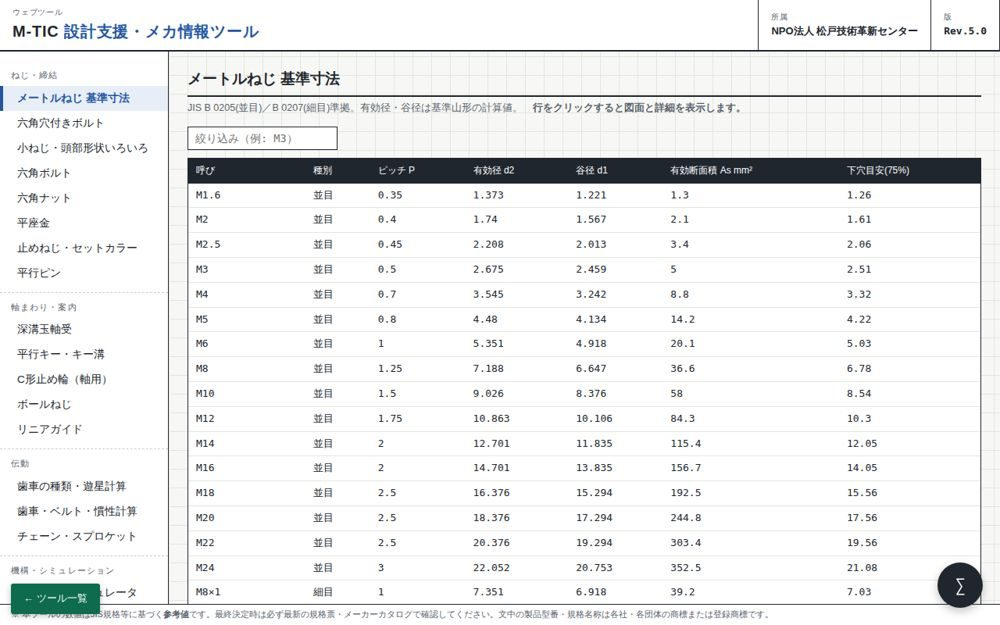
Web Tools
設計支援
設計支援・電気・ソフト開発の情報ツール
公開中
| 概要 | ねじ・軸受などの機械要素、電気設計の計算、ソフト開発の資料をまとめたウェブツール3種 |
|---|---|
| 利用 | このサイトで公開中（無料） |
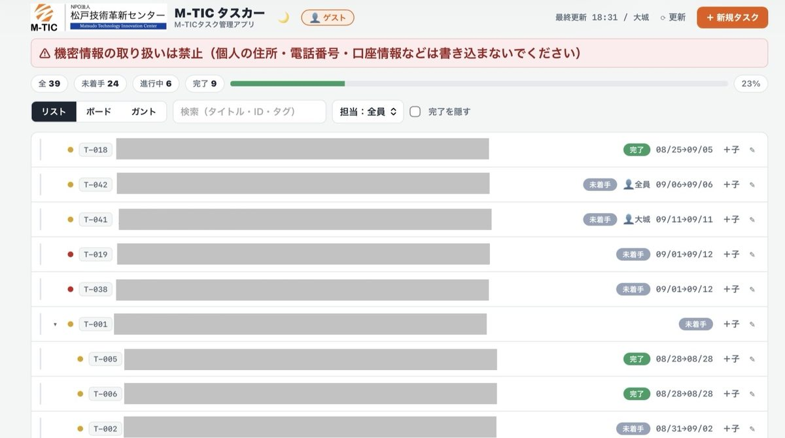
M-TICタスカー
組織運営
共有タスク管理のウェブアプリ
運用中
| 種別 | ウェブアプリ |
|---|---|
| 概要 | メンバーで共有して使うタスク管理ツール |
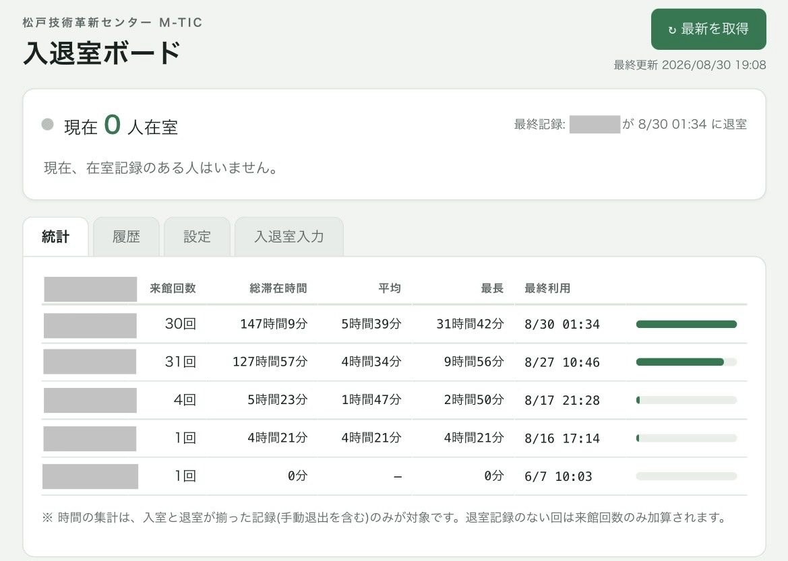
M-TIC退勤システム
組織運営
入退館を記録するウェブアプリ
運用中
| 種別 | ウェブアプリ |
|---|---|
| 概要 | 事務所の入退館を管理するツール |
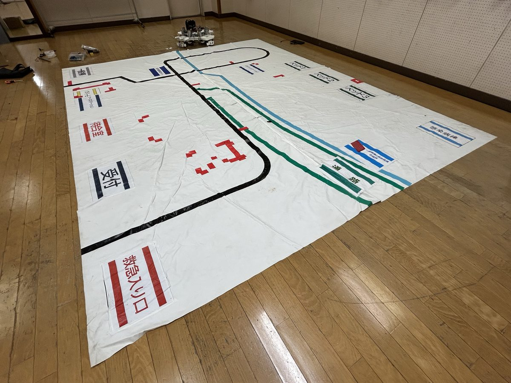
検証設備
検証環境
システムを検証するための設備
—
| 概要 | 実際のシステムを検証するための設備 |
|---|
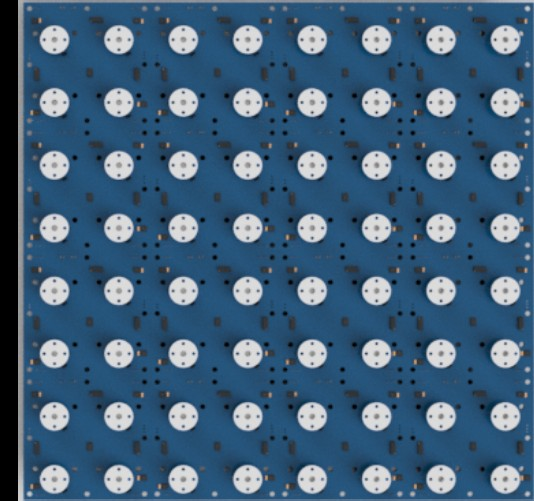
Pipe Game
キネティックディスプレイ
計算の過程をモーターで可視化するシステム
開発中
| 概要 | 8×8のパズルボードをモーターで駆動し、コンピュータがパイプゲームを解く様子を物理的に観察できるキネティックディスプレイ |
|---|---|
| 研究担当 | HAWLEY David |
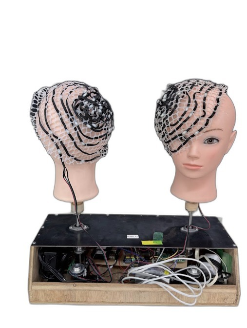
Conversing Heads
対話型ロボット
人と対話的に動作するヘッド型システム
開発中
| 概要 | 人と対話的に動作するヘッド型のインタラクティブロボットシステム |
|---|---|
| 研究担当 | HAWLEY David |
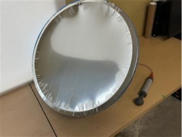
Solar Cooker
防災用アルミブランケットと桶で作る凹面鏡
試作・検証中
| 概要 | 防災用アルミブランケットを桶の開口部に張り、内部の空気を手動ポンプで抜いて凹面鏡を形成する簡易ソーラークッカー。材料はホームセンター等で入手でき、電源や特殊な工具を使わない |
|---|---|
| 研究担当 | 蔭山 悠人 |
ROS type
ミニPC向けの共通アプリ
構想段階
| 概要 | ミニPCでロボットを動かす専用の共通アプリケーションを製作予定 |
|---|
MCA series
自動グリル・総合調理
試作段階
| 概要 | 自動グリル・総合調理を目指すロボットシステム |
|---|
—
災害時の信号代替
構想段階
| 概要 | 災害時に信号の代替として交通整理を行う。車両・歩行者・自転車を検知 |
|---|---|
| 製作開始 | 2024年7月 |
ATR
人と荷物の自動輸送
構想段階
| 概要 | 人も荷物も自動輸送。大型施設・公共施設向けの新しいモビリティを目指す |
|---|---|
| 製作開始 | 2024年3月 |
部品の設計・加工から組み立て、ソフトウェアまで一貫して当法人で開発しています。いずれも研究開発段階のものであり、仕様は開発の進行に伴い変更されます。各機体の詳細な開発記録は研究ノート（教育・支援サイト内）で、設計データ・ソースコードの一部は GitHub で公開しています。
QRコードは株式会社デンソーウェーブの登録商標です。